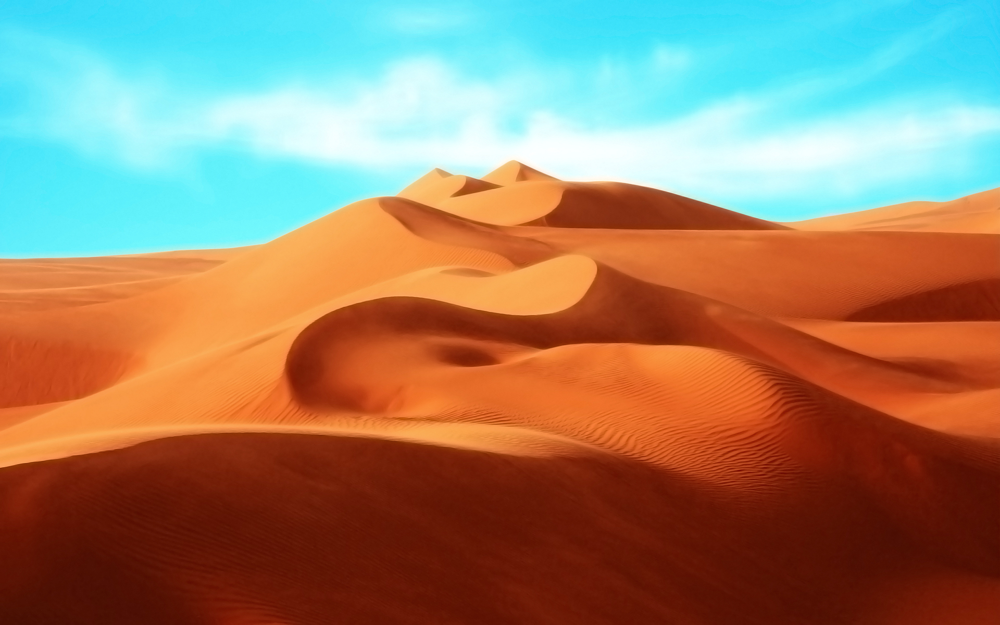

A desert is a barren area of land where little precipitation occurs and consequently living conditions are hostile for plant and animal life. The lack of vegetation exposes the unprotected surface of the ground to the processes of denudation. About one third of the land surface of the world is arid or semi-arid. This includes much of the polar regions where little precipitation occurs and which are sometimes called polar deserts or "cold deserts". Deserts can be classified by the amount of precipitation that falls, by the temperature that prevails, by the causes of desertification or by their geographical location.
 Deserts are formed by weathering processes as large variations in temperature between day and night put strains on the rocks which consequently break in pieces. Although rain seldom occurs in deserts, there are occasional downpours that can result in flash floods. Rain falling on hot rocks can cause them to shatter and the resulting fragments and rubble strewn over the desert floor is further eroded by the wind. This picks up particles of sand and dust and wafts them aloft in sand or dust storms. Wind-blown sand grains striking any solid object in their path can abrade the surface. Rocks are smoothed down, and the wind sorts sand into uniform deposits. The grains end up as level sheets of sand or are piled high in billowing sand dunes.
Other deserts are flat, stony plains where all the fine material has been blown away and the surface consists of a mosaic of smooth stones. These areas are known as desert pavements and little further erosion takes place. Other desert features include rock outcrops, exposed bedrock and clays once deposited by flowing water. Temporary lakes may form and salt pans may be left when waters evaporate. There may be underground sources of water in the form of springs and seepages from aquifers. Where these are found, oases can occur.
Plants and animals living in the desert need special adaptations to survive in the harsh environment. Plants tend to be tough and wiry with small or no leaves, water-resistant cuticles and often spines to deter herbivory. Some annual plants germinate, bloom and die in the course of a few weeks after rainfall while other long-lived plants survive for years and have deep root systems able to tap underground moisture. Animals need to keep cool and find enough food and water to survive. Many are nocturnal and stay in the shade or underground during the heat of the day. They tend to be efficient at conserving water, extracting most of their needs from their food and concentrating their urine. Some animals remain in a state of dormancy for long periods, ready to become active again when the rare rains fall. They then reproduce rapidly while conditions are favorable before returning to dormancy.
People have struggled to live in deserts and the surrounding semi-arid lands for millennia. Nomads have moved their flocks and herds to wherever grazing is available and oases have provided opportunities for a more settled way of life. The cultivation of semi-arid regions encourages erosion of soil and is one of the causes of increased desertification. Desert farming is possible with the aid of irrigation and the Imperial Valley in California provides an example of how previously barren land can be made productive by the import of water from an outside source. Many trade routes have been forged across deserts, especially across the Sahara Desert, and traditionally were used by caravans of camels carrying salt, gold, ivory and other goods. Large numbers of slaves were also taken northwards across the Sahara. Some mineral extraction also takes place in deserts and the uninterrupted sunlight gives potential for the capture of large quantities of solar energy.
| Rank | Deserts | Area/km |
|---|---|---|
| 1 | Antarctic Desert | 14,200,000 |
| 2 | Arctic Desert | 13,900,000 |
| 3 | Sahara Desert | 9,100,000 |
| 4 | Arabian Desert | 2,600,000 |
| 5 | Gobi Desert | 670,000 |